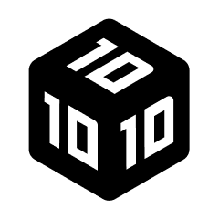

HI, I'm 1000 Cheng. A designer specialising in Experimental Visual, Motion Graphics, and Generative Art.
鄭詒謙 1000 Cheng，十立方科技有限公司創辦人，致力於製作實驗性影像與嶄新的視覺體驗，跨足於動態設計、生成藝術與互動影像。至今以獨立接案者的身分已累積超過 50 個專案合作經驗，曾與多元類型的公司與設計師合作。專案包含大型展覽投影、產品發表會、活動主視覺、品牌形象與各類動態影像。
Projects
2024
- 陽明交通大學人文藝術與社會學院 識別動態
- TTXC 2024「G.A.M.E.」未來主題展 主視覺動態
- Temporarily Open 展覽主視覺動態
- Project Patching 動態設計
- 春池 Original 識別動態
- 山丘藍台灣藍莓 發表會動態
- The Book of Veles 解說影片
2023
- 國泰世華 CUBE 簡單生活節展場 互動生成式影像設計
- 三得利歐肯 14 年品酩會 主視覺與開幕秀動態設計
- Spine 投影視覺與動態設計
- VS AI 街頭對戰 主視覺動態
- CNU Bridge Trading 識別動態
- RIDERMENT 品牌形象動態
- 卯兔 52 設計師賀卡創作聯展 參展
- DAMN 識別動態
2022
- 臺北表演藝術中心開幕主視覺 動態設計
- 屏東菸廠沉浸體驗特展 投影動態設計
2021
- Gogoro VIVA MIX 發表會動態
- 台北服裝時裝週開幕秀 投影動態
- ROG Phone 5 發表會動態
- 2021 臺南國際音樂節 主視覺動態
- 2021 臺灣文博會參拜大廳 投影動態
- Netflix 社群節目台式影劇回顧 動態設計
- 佳世達 Qisda 立柱動態設計
- MUTANT 集體異變實體展 參展
2020
- DigiWave 2020《遙視 Clairvoyance》 投影動態
- PONY5IBE -【They Said】ft 陳嫻靜 MV
- 台北電影節 Taipei Film Festival 片頭
- 金馬 57 最佳劇情短片 入圍片頭動畫
- 金馬 57 最佳攝影 入圍片頭動畫
2019
- 《 TGIF台北設計電波 》國際設計交流年會 宣傳片
- 2019 實踐大學設計學院國際設計學術與創作研討會 宣傳片
Experience
2021.9 — Present
- 10x10x10 Studio | Founder & Motion Designer
2023.7 — 2023.8
- Dimension Plus | Engineering Intern
2020.6 — 2022.8
- Eagle App | Product Designer
2016.9 — 2020.6
- Shih Chien University, Department of Communications Design
2018.7 — 2018.8
- LAVI Animation Studio | Animation Intern
Toolkits
Motion
- After Effects | Cinema 4d | Blender
Graphics / UI
- Figma | illustrator | Photoshop
Coding
- TouchDesigner | p5.js